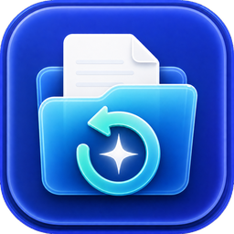

Recoup は、外付けHDD・SSD・SDカード・USBメモリから、削除された写真や動画を復元する macOS 用アプリです。
Last updated: 2026-07-26
RustyWorks は、Recoup を通じて個人情報、利用統計、解析データ、広告識別子を収集しません。アプリには独自のユーザー追跡、広告SDK、解析SDKは含まれていません。
Recoup はネットワーク通信を行いません。アプリにはネットワーク機能そのものが実装されておらず、外部と通信することができません。
したがって、スキャンしたディスクの内容、復元したファイル、ファイル名、利用状況などが外部へ送信されることはありません。更新確認やテレメトリの送信もありません。
アプリは、動作のために以下の情報をお使いの Mac 内にのみ保存します。
report.csv）scan.progress）これらはすべてお使いの Mac 内に留まり、開発者のサーバーへ送信されません。
Recoup は、お客様が明示的に選択したディスクおよびディスクイメージにのみアクセスします。
復元元のディスクは常に読み取り専用で開かれ、書き込みは一切行いません。書き込みが発生するのは、お客様が指定した保存先フォルダに対してのみです。
生のディスクを読み取る際には、macOS 標準の認証ダイアログを通じて管理者パスワードの入力を求められます。入力されたパスワードはアプリが受け取ることはなく、macOS が処理します。
本アプリの購入・決済は itch.io を通じて行われ、それらの取引情報は itch.io のプライバシーポリシーに従って扱われます。開発者がクレジットカード情報等を受け取ることはありません。
本ポリシーに関するご質問は、RustyWorks のお問い合わせまでご連絡ください。
No network access. Recoup makes no internet connections and has no networking capability.
No data collection. No analytics, crash reporting, or telemetry of any kind.
Read-only source. The app never writes to the disk you are recovering from; recovered files are written only to the destination you choose.
Local only. Recovered files, the scan report, and resume state stay on your Mac.
Purchases are handled by itch.io under its own privacy policy; the developer does not receive your payment details.